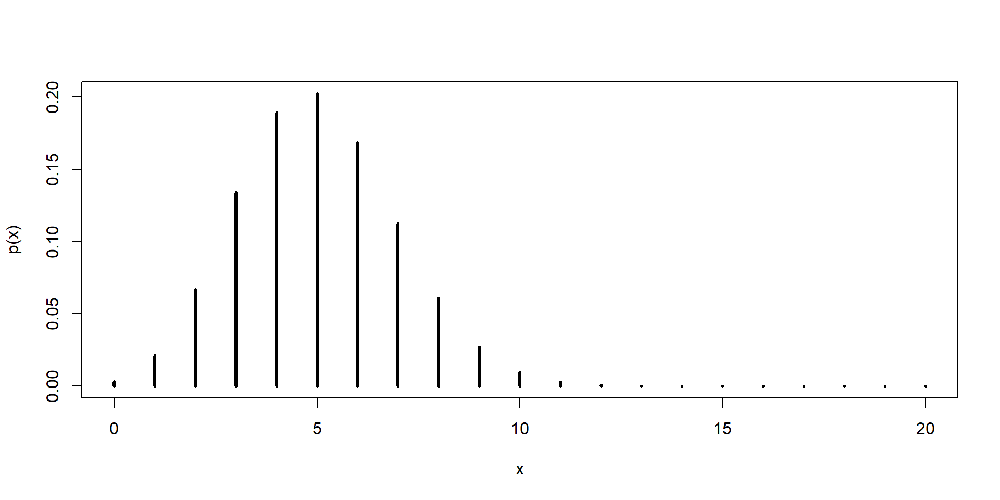
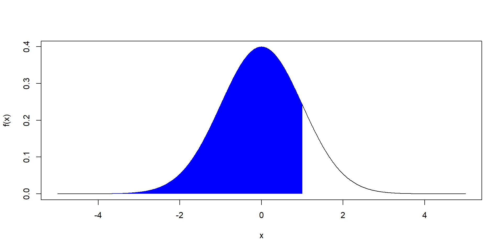
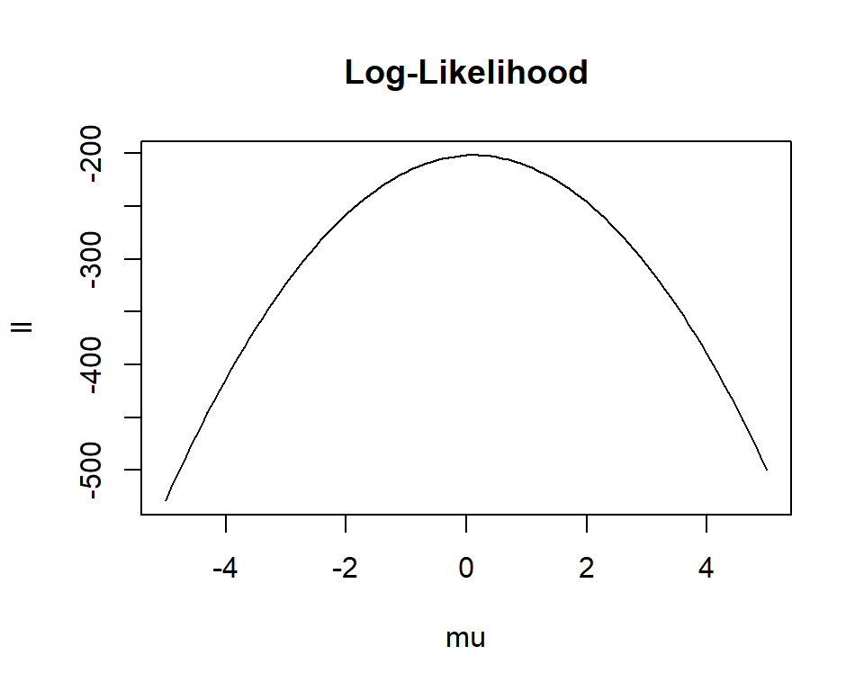
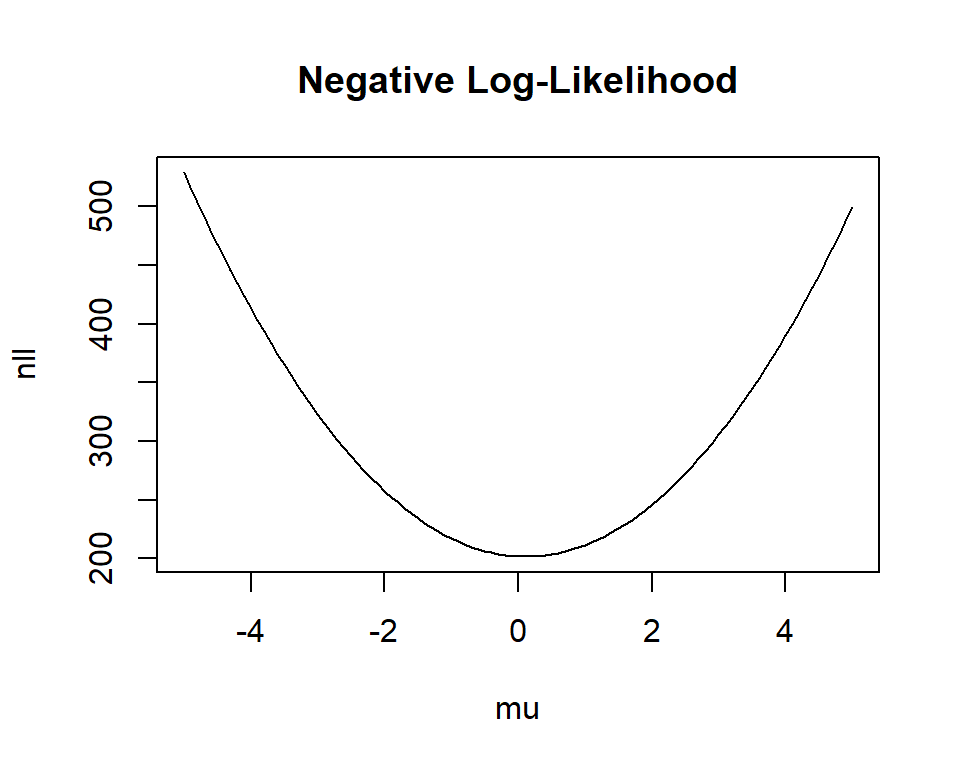
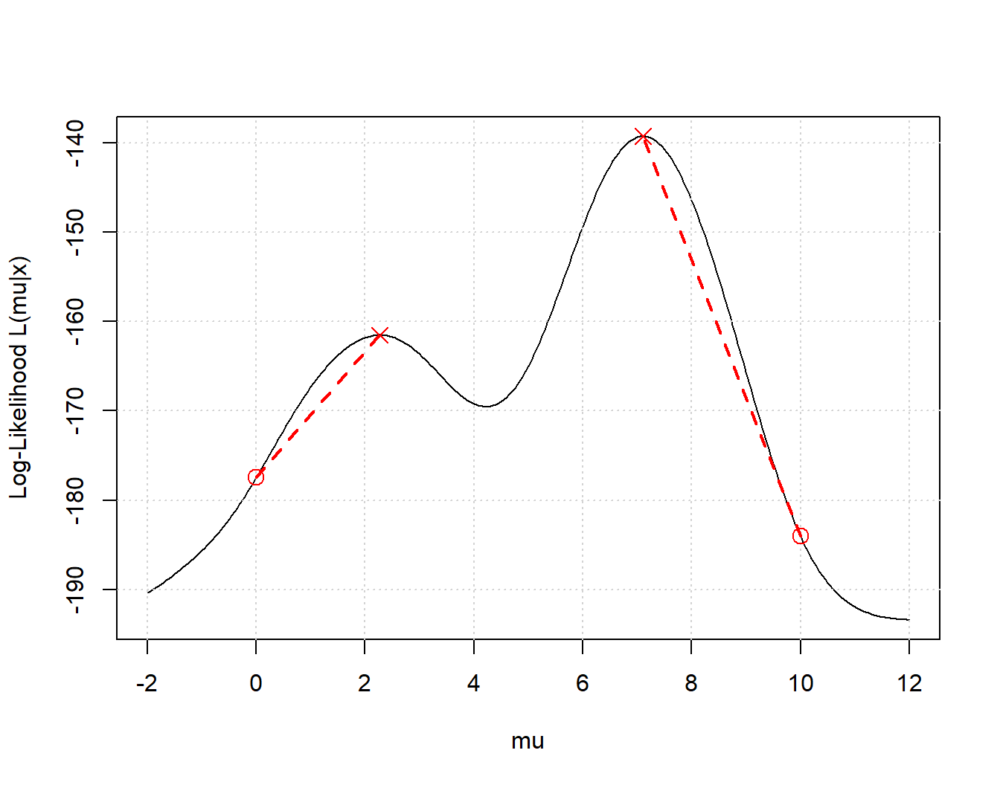

nimbleQuad and spbalglmmTMB.

[1] 2.4687[1] 2.5[1] 0.4979509[1] 0.5[1] 0.2536976[1] 0.25

\[ \log(L(\boldsymbol{\theta}|\mathbf{x}) = \sum \log(f(x_i)). \] - This is best done in R vectorized. Loops are generally slow, especially when nested. - In C++ loops are very fast.
x <- rnorm(1000, 0, 5)
ll_vec <- \(a){
lfx <- dnorm(x, 0, 5, log = TRUE)
ll <- sum(lfx)
ll*a
}
ll_loop <- \(a){
ll <- 0
for( i in 1:1000){
ll <- ll + dnorm(x[i], 0, 5, log = TRUE)
}
ll*a
}
## First taste of RTMB... :)
ll_loopc <- RTMB::MakeTape(ll_loop, 1)
microbenchmark::microbenchmark(
vectorized = ll_vec(1),
looped = ll_loop(1),
looped_c = ll_loopc(1),
times = 100
)Unit: microseconds
expr min lq mean median uq max neval cld
vectorized 27.5 29.35 43.410 30.5 32.45 1214.1 100 a
looped 449.8 468.55 520.378 489.5 571.20 743.4 100 b
looped_c 1.1 1.30 3.058 2.3 3.30 22.7 100 coptim or nlminb